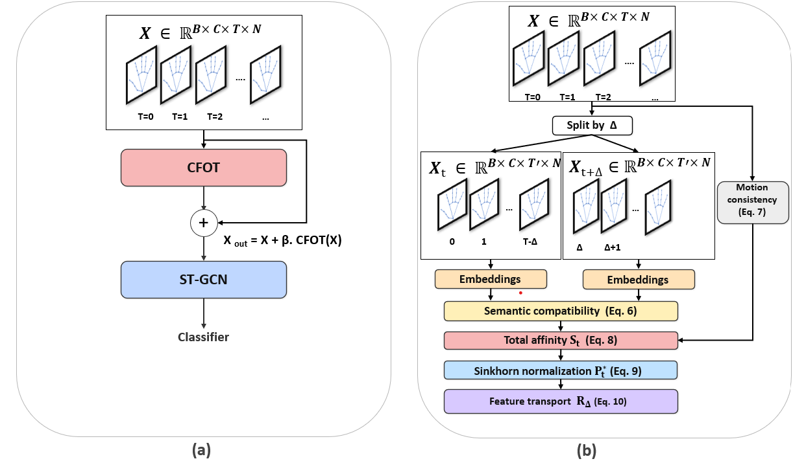

Skeleton-based hand gesture recognition has achieved remarkable progress
with spatio-temporal graph convolutional networks (ST-GCNs). However,
existing approaches typically rely on fixed, identity-aligned temporal
connections, which limits robustness under repeated motions, temporal
phase shifts, and variable execution speeds.
We propose Cross-Frame Optimal Transport (CFOT), a
lightweight temporal modeling framework that formulates cross-frame
dependency learning as an optimal transport problem between frames at
multiple temporal offsets. CFOT learns motion-aware affinities and
computes approximately doubly-stochastic transport plans, enabling
stable joint-to-joint interactions across non-consecutive frames beyond
fixed sequential links.
The proposed module integrates seamlessly into standard ST-GCN backbones
via residual refinement and incurs minimal computational overhead.
Experiments on IPN and Briareo demonstrate consistent improvements in
recognition accuracy and efficiency. Additionally, we introduce a new
skeleton-based Indian Sign Language (ISL) dataset and show effective
cross-subject generalization using consumer-grade capture devices.
